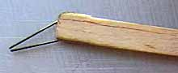

 One of the tricks with instant adhesives is to use enough to do the job, but not so much as to unnecessarily add weight. This is especially important as you start to build smaller and lighter models.
Pictured is an applicator I made for working with these glues. It was inspired by one made by Jason McGuire. Dipping the tips of the wire into a puddle of glue will allow a very small drop to be picked up, and then applied to the structure. If it is not enough, another drop can be easily added. Mine is made of a hard scrap of 1/8" x 1/4" balsa about 10" long with a small tab is glued onto the back side to sandwich the 0.020 music wire in place. The other end of the handle is slotted and holds a small piece of a disposable razor blade. This is used for trimming and picking up small pieces of wood as I build.
Jason made his with a longer dowel handle for repairing structural breaks deep in a fuselage. His dowel is calibrated with inches marked on it, so that he can measure where the damage is from the outside of the fuse. He then accurately places the glue inside where depth perception can be tough. His applicator is also a little different, with two parallel wires instead of the triangular shape shown. On the opposite end, he has a small wire loop for picking up a bigger drop than the wires allow.
When the tip clogs with glue, you can swipe it with an X-acto blade to clean it, or just pass it through a candle flame. Both techniques work well, though please do be careful with both blades and flame.
return to